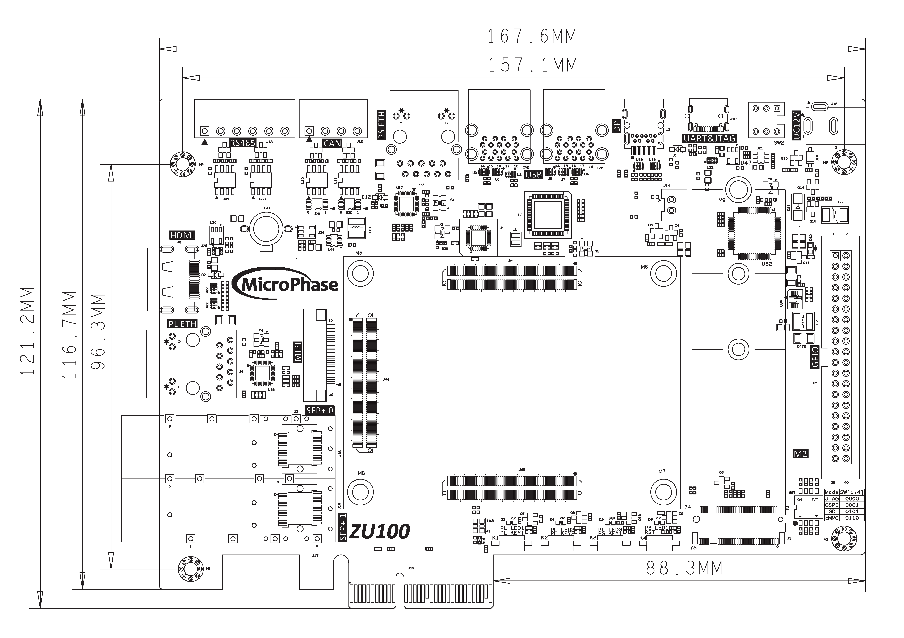
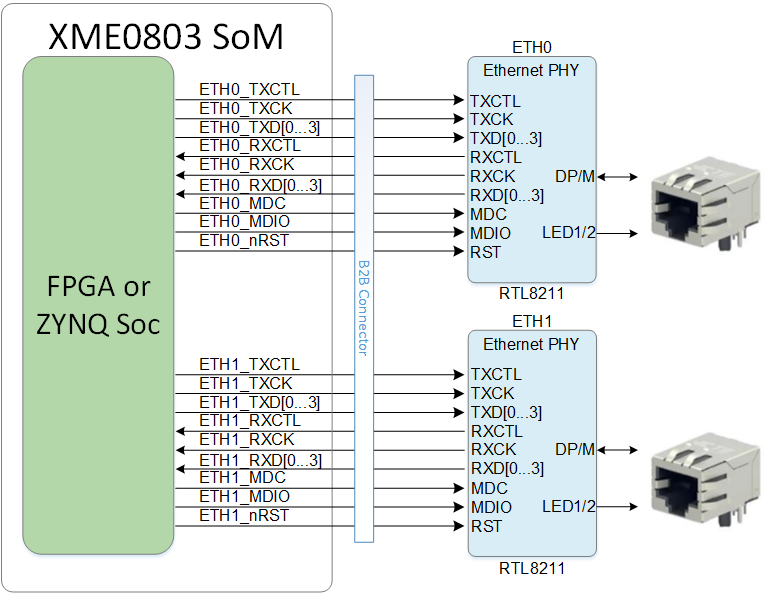
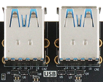
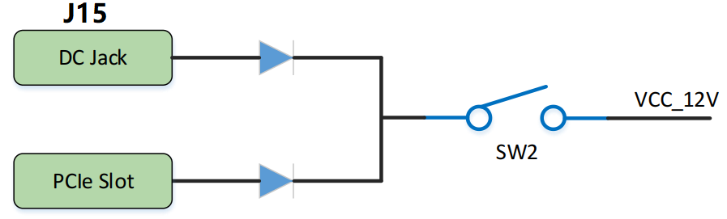

XPE_ZU100 Reference Manual
WeChat Public Number:

●1. Overview
Using XPE_ZU100, you can quickly test, develop, and evaluate the function of XME0803. It provides various interfaces for XME0803, such as HDMI TX, Giga ETH, SFP, PCIe 3.0 x2, USB3.0 x4 and so on. The following is based on the XME00803(4EV) unless noted.
○Board Layout

○Key Features
1 PCIe3.0 x2
2 Giga ETH supports 10/100/1000M network transfer rate,
1 for PS, 1 for PL
1 SFP x2
1 USB3.0 x4
1 NVME M.2
1 2-Lanes MIPI
1 HDMI TX
1 Mini DP
1 RS485 x2
1 CAN x2
1 USB UART&JTAG
1 SD
1 40-Pin Extension Port
1 System Rest Key, 3 User’s Keys
4 User’s LEDs
○Mechanical Spec

○Core Board Matching Description
✔️：Support
❌：Not support
⚠️ : Pay attention when using
⭐ : Not fully supported
| XPE_ZU100 | XME0803(3EG) | XME0803(4EV) |
|---|---|---|
| PCIE3.0 x2 | ❌ | ✔️ |
| PS ETH | ✔️ | ✔️ |
| PL ETH | ✔️ | ✔️ |
| SFP x2 | ❌ | ✔️ |
| USB3.0 x4 | ✔️ | ✔️ |
| NVME M.2 | ✔️ | ✔️ |
| MIPI | ✔️ | ✔️ |
| HDMI TX | ✔️ | ✔️ |
| Mini DP | ✔️ | ✔️ |
| RS485 x2 | ✔️ | ✔️ |
| CAN x2 | ✔️ | ✔️ |
| USB UART&JTAG | ✔️ | ✔️ |
| SD | ✔️ | ✔️ |
| 40-Pin Extension Port | ✔️ | ✔️ |
●2. Function Resources
○PCIe
The XPE_ZU100 features a PCIe x2 interface, supporting 2 TX and RX channels connected to the PCIe edge connector. It enables PCIe 3.0 (backward compatible with 2.0) data communication. A single channel achieves a communication rate of up to 8 Gbps, meeting the data transfer capabilities of PCIe Gen 3.
The PCIe reference clock is provided by the PCIe ROOT device (typically a PC) through the PCIe slot to the development board. The reference clock frequency is 100 MHz.
The hardware connection diagram of the PCIe interface is as follows:

○Giga ETH
The carrier board provides 2 Gigabit Ethernet interfaces. The phy IC of ETH0 is integrated in the core board. It’s connected with core board according to the signs of MDI. More information of the ETH0 PHY, please reference the corresponding core board document.
The RTL8211F chip supports a 10/100/1000M network transfer rate and communicates with the MAC layer of the Zynq7000 PS system via the RGMII interface. It also supports MDI/MDX adaptation, multiple speed adaptation, master/slave adaptation, and MDIO bus support for PHY register management.
Diagram of connecting the core board and two Ethernet phy chips.

○SFP
The ZU100 provides two SFP interfaces, each SFP using one transceiver channel. According to it user can use SFP hot plug optical module to fibre optic data communications.
Each SFP interface includes the following signals:
Transceiver: Provides one channel for data transmission up to 12.5 Gb/s.
SMBUS (I2C): 3.3V signal for module management.
Control signals: Includes status control.
Reference clock: A 125 MHz differential clock from the carrier board.
○USB3.0
The ZU100 features four Type-A USB 3.0 host ports, offering data transfer speeds of up to 5.0 Gb/s. USB 3.0 is connected through the PIPE3 interface, while USB 2.0 is connected to the external USB3320C chip via the ULPI interface, enabling high-speed data communication for both USB 3.0 and USB 2.0.

○USB UART&JTAG
The carrier board provides a USB to UART and JTAG interface, the chip is FTDI FT2232H. The USB interface is TYPE-C.
○NVME M.2
The development board is equipped with a PCIe x1 standard M.2 interface for connecting M.2 SSDs, supporting communication speeds of up to 6Gbps. The M.2 interface utilizes an M key slot and supports only PCIe, not SATA. When selecting an SSD, users must choose a PCIe-based SSD. The PCIe signals are directly connected to the ZU15EG’s BANK505 PS MGT transceiver, with one TX signal and one RX signal connected as differential signals to LANE1 of the MGT. The PCIe clock is provided by the Si5332 chip, with a frequency of 100MHz.
○MIPI
The MIPI CSI port on the board is a 15-pin, 1 mm pitch top contact FPC connector designed to connect a MIPI interface camera. The MIPI FPC connector pinout is compatible with Raspberry Pi cameras.
The MIPI CSI-2 receiver IP core is available from Xilinx and includes embedded Linux support. It requires a licence to use, but it is possible to obtain an evaluation licence from Xilinx at no cost.
○HDMI TX
One HDMI video output interface can realize 1080P video images. Can be configured as HDMI input.
○Mini DP
1 mini DisplayPort output display interface for video image display. The DisplayPort data transmission channel is driven directly by the BANK505 PS MGT on the SoM board, with the MGT signal transmitted to the DP connector in a differential signal format. The DisplayPort auxiliary channel is connected to the MIO pins of the PS. It supports a maximum output of 4K @30Hz or 1080P @60Hz.
○Power
Please note that the power input of XPE_ZU100 is +12V. We recommend using a 12V/2A power supply.

○LED
The XPE_ZU100 board provides five LEDs, a power indicator and four user’s LEDs. When the corresponding pin of the FPGA is in a high state, the LED is illuminated.
| Position | Signal Name | Pin Number |
|---|---|---|
| D6 | PS_LED1 | H18 |
| D3 | PL_LED1 | E1 |
| D4 | PL_LED2 | D1 |
| D5 | PL_LED3 | G1 |
○Key
We provide three keys for user to use. Once the key is pressed, the corresponding pin of the FPGA will be on the low level.
| Position | Signal Name | Pin Number |
|---|---|---|
| K3 | PS_KEY1 | H19 |
| K1 | PL_KEY1 | A2 |
| K2 | PL_KEY2 | A1 |
○GPIO
The carrier board provides one IDC40 GPIO expansion ports, JP1, which allows connection to Microphase Technology modules or additional peripherals. When using the IOs, be sure to ensure that the voltage of the connected signal is consistent.
| Pin | Signal Name | Pin Number | Pin | Signal Name | Pin Number |
|---|---|---|---|---|---|
| 1 | GPIO1_0P | AH12 | 2 | GPIO1_0N | AH11 |
| 3 | GPIO1_1P | AE12 | 4 | GPIO1_1N | AF12 |
| 5 | GPIO1_2P | AG10 | 6 | GPIO1_2N | AH10 |
| 7 | GPIO1_3P | W12 | 8 | GPIO1_3N | W11 |
| 9 | GPIO1_4P | AE15 | 10 | GPIO1_4N | AE14 |
| 11 | VCC_5V | - | 12 | GND | - |
| 13 | GPIO1_5P | W14 | 14 | GPIO1_5N | W13 |
| 15 | GPIO1_6P | AD15 | 16 | GPIO1_6N | AD14 |
| 17 | GPIO1_7P | AC14 | 18 | GPIO1_7N | AC13 |
| 19 | GPIO1_8P | AA13 | 20 | GPIO1_8N | AB13 |
| 21 | GPIO1_9P | AD11 | 22 | GPIO1_9N | AD10 |
| 23 | GPIO1_10P | AA11 | 24 | GPIO1_10N | AA10 |
| 25 | GPIO1_11P | W10 | 26 | GPIO1_11N | Y10 |
| 27 | GPIO1_12P | Y12 | 28 | GPIO1_12N | AA12 |
| 29 | VCC_3V3 | - | 30 | GND | - |
| 31 | GPIO1_13P | Y14 | 32 | GPIO1_13N | Y13 |
| 33 | GPIO1_14P | AG13 | 34 | GPIO1_14N | AH13 |
| 35 | GPIO1_15P | AG14 | 36 | GPIO1_15N | AH14 |
| 37 | GPIO1_16P | AE13 | 38 | GPIO1_16N | AF13 |
| 39 | GPIO1_17P | AB15 | 40 | GPIO1_17N | AB14 |